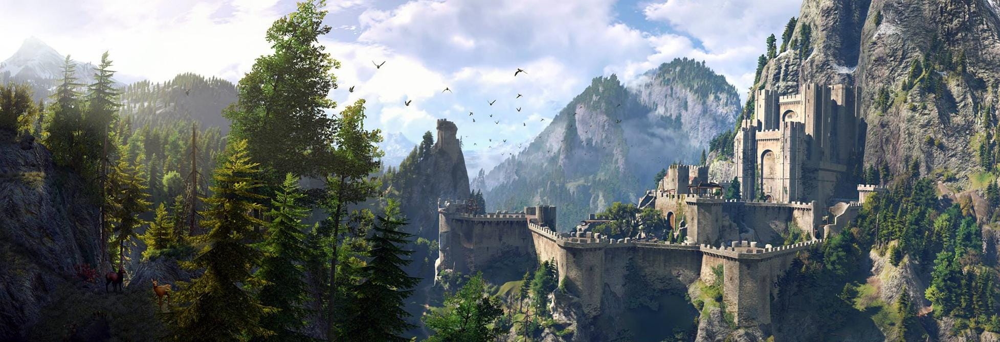
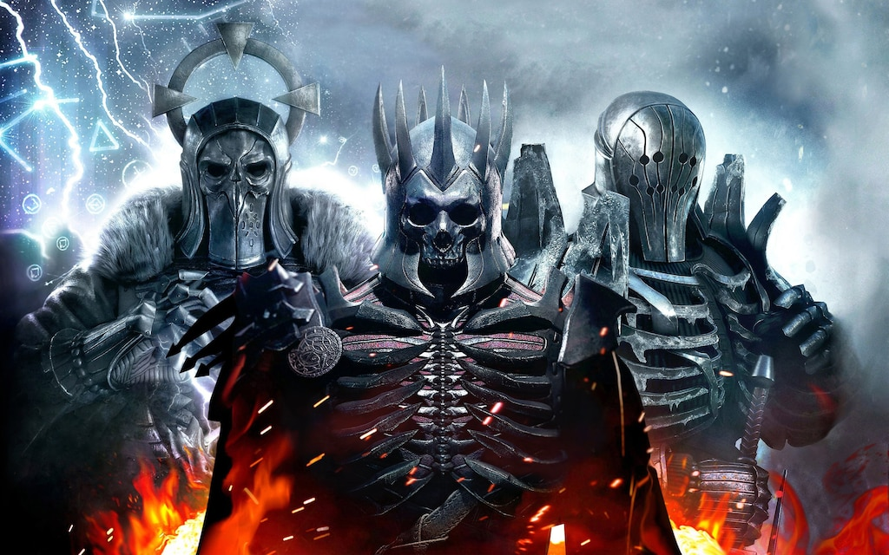

Na počátku třetího dílu je Kaer Morhen v podstatě stínem své bývalé slávy. Pevnost před lety přežila fanatický útok pogromistů, který nepřežila většina zaklínačů ani vědmáků, kteří znali tajemství mutací (Zkoušky trav). V době hry slouží jako místo, kam se zbývající zaklínači ze Školy vlka - Geralt, Eskel, Lambert a jejich mentor Vesemir - vracejí přečkat krutou zimu. Pevnost symbolizuje melancholii, vymírání zaklínačského řemesla a blížící se konec jedné éry. Hra začíná hratelným prologem, který je ve skutečnosti Geraltovým snem. Odehrává se v prosluněné, ještě nezničené Kaer Morhen v době, kdy byla Ciri ještě dítě a cvičila se zde v šermu pod dohledem Vesemira, Geralta a Yennefer. Tento úvod slouží jako tutoriál, ale hlavně emocionálně připravuje hráče na to, jak silné pouto mezi touto „rodinou“ existuje. V pozdější části hry se zde odehrává bitva s Divokým honem (přízrační démoni). Vesemirova smrt znamená definitivní konec Kaer Morhen. Po jeho emotivním pohřbu se zbývající zaklínači rozhodnou pevnost navždy opustit. Eskel a Lambert odcházejí každý svou cestou a z pevnosti se stává opuštěné místo duchů. Když se hráč po skončení hlavní dějové linie vrátí do Kaer Morhen (v rámci volného pohybu po světě), pevnost je naprosto prázdná a tichá. Tento kontrast mezi dřívějším shonem během příprav na bitvu a naprostou opuštěností podtrhuje melancholický tón, kterým je celá zaklínačská sága proslulá.
